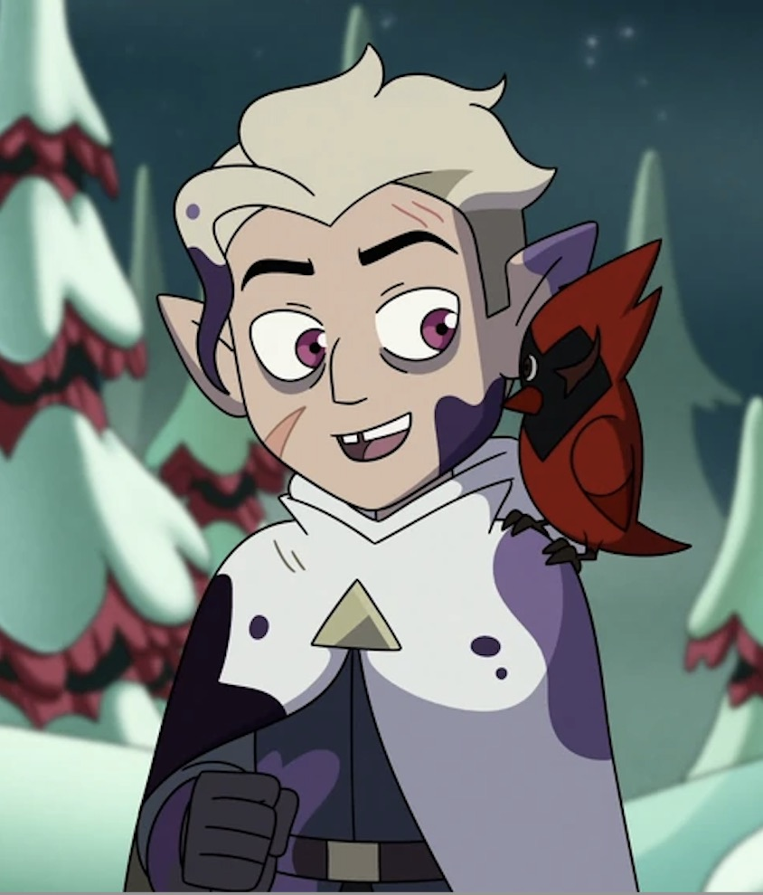
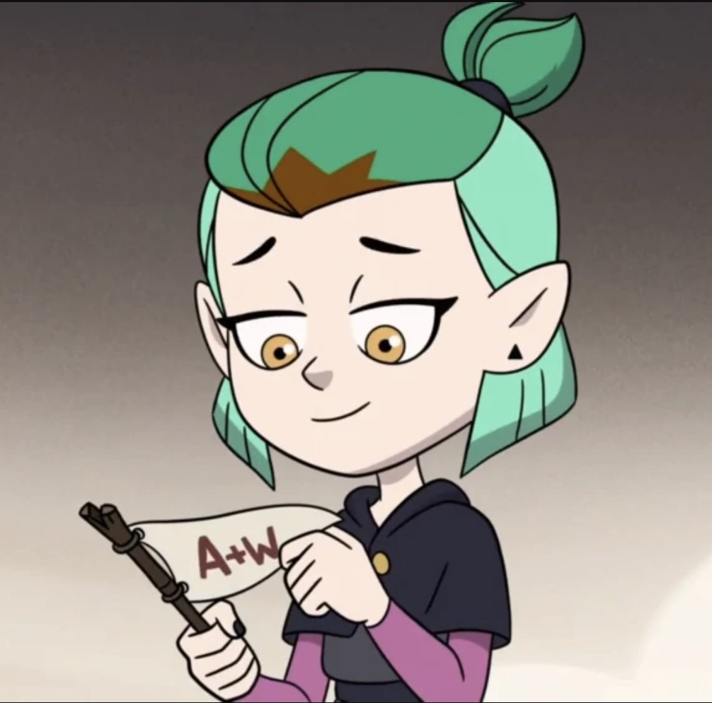
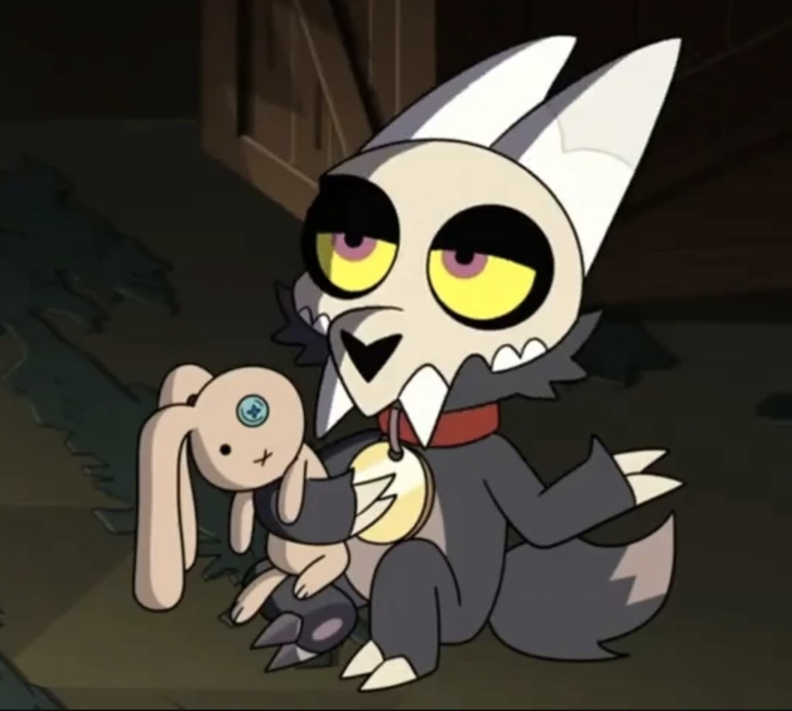

The Owl House is set in a world where there is a human realm, which is like our world, and a demon realm, a fantasy realm filled with magic. The main characer Luz is a human who accidentally gets herself stuck in the demon realm and has to find her way back. She befriends a witch named Eda and her friend King who start to help her, and then Luz also becomes friends with some of the students at Hexide School of Magic and Demonics. While she is in the demon realm, Luz realizes that there is a way for her to do magic as a human, which becomes helpful because the group realizes that there is a much bigger problem than just getting Luz back to the human realm.
My favorite character in the show is Hunter. When Hunter is introduced in the show he is known as the Golden Guard, and is the right hand man of the evil Emperor Belos. At first he says that he is the Emperor's nephew, but he finds out that he is not the first Golden Guard. Emperor Belos has had many Golden Guards because once one dies he makes a new clone, so Hunter is the current Golden Guard. Hunter starts out being on the Emperor's side and helping him try to get rid of "wild magic," but once he realizes he is a clone he abandons the Emperor and is taken in by Luz and Eda.

Photo found on The Owl House Fandom page
My second favorite character is Amity. Amity is a student at Hexide, and at the beginning of the show is kind of a bully. She is onto Luz from the beginning and does not want her at Hexide because she is a human, but Luz is determined to become her friend. Amity comes off as pretentious and a bit rude at first, but as Luz quickly finds out Amity has a soft side and was only acting the way she did because of the pressure from her family. Luz succeeds in becoming friends with Amity, and they eventually start dating.

Photo found on the Disney Fandom page
My third favorite character is King. King was adopted by Eda when he was a baby and she stumbled accross him while on the run. For a while no one knows what King really is or who his father is, but he discovers that he is actually a Titan. He started the show thinking he had no magical abilities, but when he goes through what they refer to as "demon puberty" he develops some magic.

Photo found on the Disney Fandom page
{kind=link}
{kind=link}
/Gallery?file=O_Titan%252C_Where_Art_Thou_%2528127%2529.jpg){kind=link}